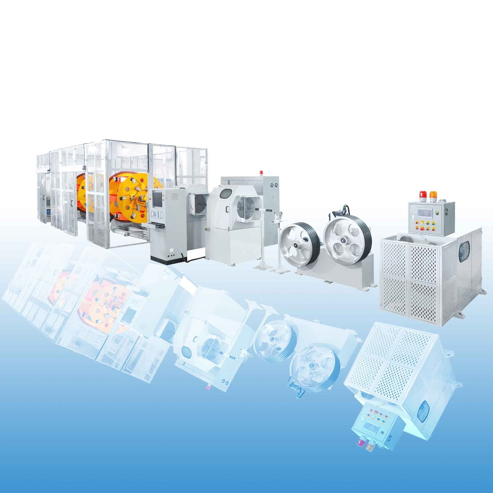

笼绞机的常见问题及生产流程
笼绞机是近年来发展迅速的新型设备，进口机型设计方案选择可编程控制器作为机械和设备控制的关键，为了更好地满足高产的要求，全自动实体模型一般采用双头连杆设计方案。 配合智能机器人、气动控制设备和备件，实现自动横移、自动缠绕、自动切割、自动控制等功能，自动左右物料等，那么，下面就来了解一下使用笼绞机的常见问题及生产流程。
笼绞机生产效率高，大大降低了对人力资本的依赖，特别适用于产量高的生产加工场所。 众所周知，实体模型集成了数控机床、气动、光学开关等多种新技术应用。 此外，实际操作技术人员可以同时监测多台此类机器和设备，生产制造质量比较稳定，由于笼绞机和设备的部件使用了许多非标准部件和定制部件，因此相关维护的整个过程非常复杂，出现问题时周期会变长。
1 .线圈规格问题
使用笼绞机缠绕单匝时，控制高速笼式绕线机抗拉强度的磁粉离合器电流设定为0.45，a缠绕线圈后，b端规格稍大，超过了加工工艺要求。
2 .线圈规格问题原因分析
发现，如果将笼绞机张力阻力相关的电流设定为0.45a，则卷取过程中张力阻力太小，导致卷筒内导线的受力不均匀。 上卷筒与导线座之间的导线不是理想水平，只是倾斜松动，卷筒旋转时，由于惯性力的作用，卷筒速度快，导线滑动更多，导致绕组中导线支撑不均匀，绕组年糕紧密度不足，b线圈规格超过技术要求
笼绞机是一种广泛应用的型号和规格，也称为数控自动绕线机。 可自动接线，可根据机械系统执行不同的绕组电阻调整。 许多制造商已经在功能和使用上进行了自主创新。 升级后，使用的产品系列仍在继续扩大。 作为市场上常见的模型和标准，具有效率高、维护方便、性价比高等优点。 长期以来是一种非常完善的实体模型，该标准的价格远远低于实际使用的数不清的自动链条移动的价格。
笼绞机线的生产注意事项：
1 .粗铜线标准良好，铜线整齐排列，铜线圆润，表面光亮，无氧化。
2 .机器电气配置和仪表显示正常，机器转动部分运行平稳，部件无松动。
3 .根据钢绞线规格，调整拉丝张力至合适值。
4 .选择中间铜线穿计数针。
5 .将夹线盘上的电线合理分开穿线，将夹线盘和绞模调整到合适位置。
6 .选择合适的压接模具，确保铜线光滑，无跳股、划痕。
7 .铜线通过的滚轮灵活旋转，各滚轮无铜线松动。
8 .机内无异物，卷取机安装牢固，保护信号反馈(传感器检测仪)完整。
以上介绍的就是笼绞机的常见问题及生产流程。如需了解更多，可随时联系我们!
